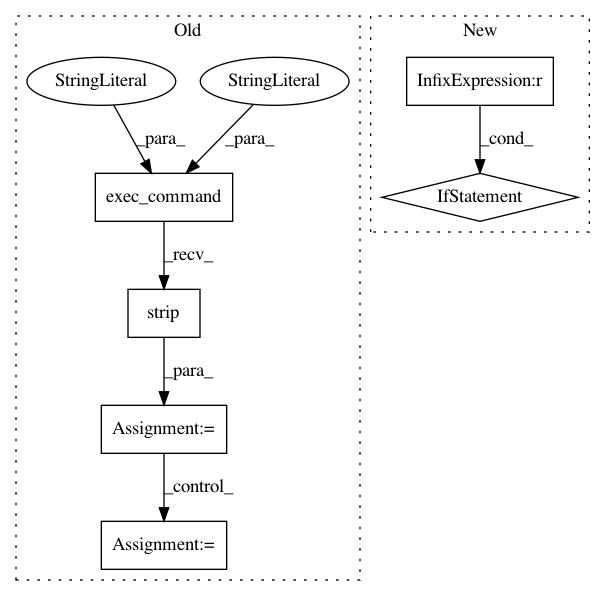

62c5df5761a64f22a4e6b797fd832db54d48c000,PyInstaller/utils/git.py,,get_repo_revision,#,24
Before Change
pass
return ""
try:
rev = exec_command("git", "rev-parse", "--short", "HEAD", cwd=cwd).strip()
if rev:
// need to update index first to get reliable state
exec_command_rc("git", "update-index", "-q", "--refresh", cwd=cwd)
changed = exec_command_rc("git", "diff-index", "--quiet", "HEAD", cwd=cwd)
if changed:
rev += ".mod"
// According to pep440 local version identifier starts with "+".
return "+" + rev
After Change
exec_command_rc("git", "update-index", "-q", "--refresh", cwd=cwd)
recent = exec_command("git", "describe", "--long", "--dirty", cwd=cwd).strip()
tag, changes, rev = recent.rsplit("-", 2)
if changes == "0":
return ""
if rev == "dirty":
rev = changes + ".mod"
// According to pep440 local version identifier starts with "+".
return "+" + rev
In pattern: SUPERPATTERN
Frequency: 3
Non-data size: 6
Instances
Project Name: pyinstaller/pyinstaller
Commit Name: 62c5df5761a64f22a4e6b797fd832db54d48c000
Time: 2016-01-21
Author: h.goebel@crazy-compilers.com
File Name: PyInstaller/utils/git.py
Class Name:
Method Name: get_repo_revision
Project Name: pyinstaller/pyinstaller
Commit Name: 336638affd7687ffa272ea75a4a6f838dc9c598a
Time: 2015-10-25
Author: h.goebel@crazy-compilers.com
File Name: PyInstaller/depend/utils.py
Class Name:
Method Name: _resolveCtypesImports
Project Name: pyinstaller/pyinstaller
Commit Name: f605c18baf0565c1ba850e4f7670a652f61c098c
Time: 2016-01-21
Author: h.goebel@crazy-compilers.com
File Name: PyInstaller/utils/git.py
Class Name:
Method Name: get_repo_revision